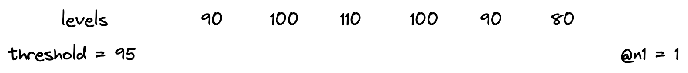
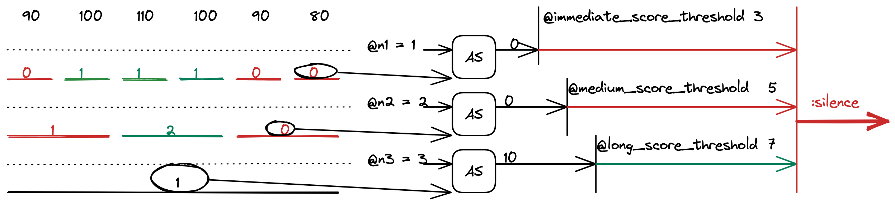
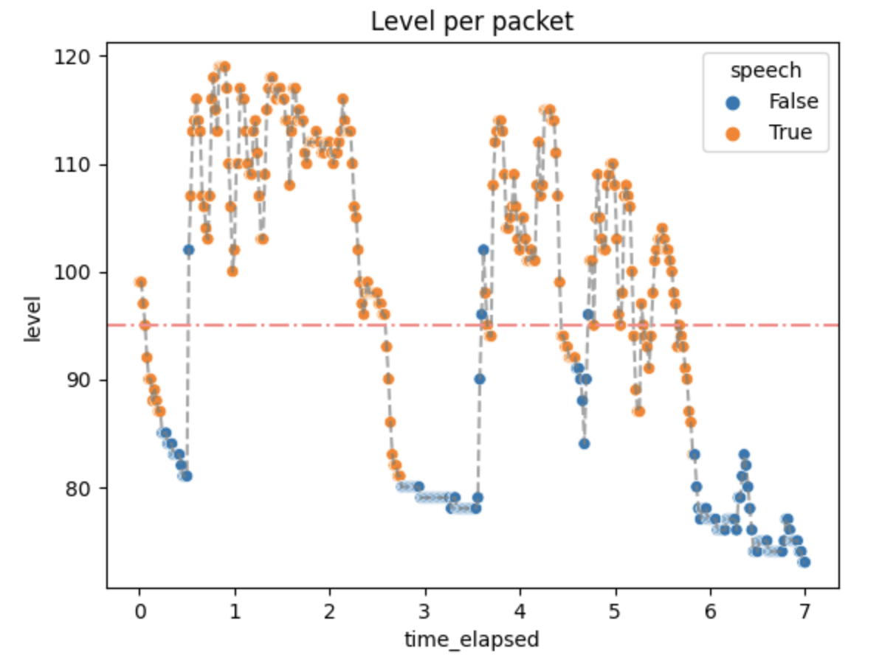
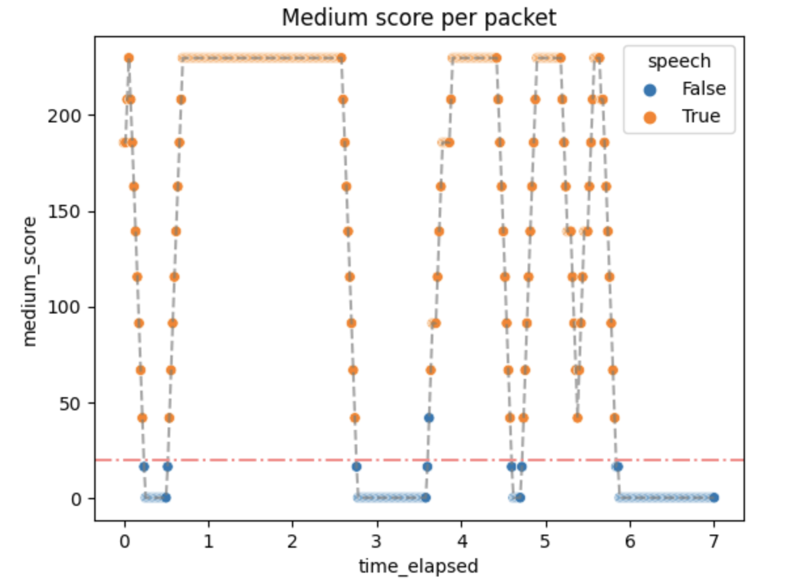

Voice Activity Detection
It's just thresholding with extra steps
Table of contents
- Introduction
- What does the WebRTC protocol provide?
- The algorithm
- Implementation details
- Tests, tests tests!
- Conclusions
Introduction
Voice Activity Detection (or VAD for short) is a technology that enables the automatic detection of speech activity in an audio signal. This is an essential tool for various applications such as speech recognition, speaker diarization, and voice communication systems.
In video conference applications VAD is implemented as a part of the audio processing pipeline. When a user speaks, the VAD algorithm detects the presence of speech activity by analyzing the noise levels of the audio signal.
For example, VAD can be used for showing an indicator that the user is speaking. In the picture below it can be seen in the upper left corner of the video tile.

What does the WebRTC protocol provide?
Audio Level Header extension
RFC 6464 defines an Audio Level Header extension, which is very useful in the context of Voice Activity Detection, as it takes the implementation load of the SFU.
The Extension carries the information about the audio level in -dBov with values from 0 to 127.
Please pay attention to the minus, as it makes it so that the louder it gets, the lower the value becomes.
The fact that values are negative is a consequence of a definition of the dBov unit.
What is
dBov
dBovis defined as the level in decibels relative to the overload point of the system. In this context, an overload point is the highest-intensity signal encodable by the payload format. In simpler terms, the overload point is the loudest possible sound that can be encoded into the codec.
RFC 6464 also defines an optional flag bit "V". When the use of it is negotiated, it indicates whether the encoder believes the audio packet contains voice activity.
Hopefully, you now have some understanding of the value in the level field, and we can jump right into the algorithm.
Don't worry, it's not difficult at all.
Audio Level processing
You could use the flag bit "V" if available, but we don't recommend using it for the production environment for 2 reasons:
- It is optional, so you cannot be sure it will always be there.
- Implementation isn't standardized, meaning you can have inconsistent behavior depending on the sender.
So it's time to implement a different approach...
The algorithm
First, let's define the inputs and outputs of our function that would perform VAD. The function takes audio noise levels and the noise threshold value as inputs. It returns information on whether the given audio levels indicate if the person is speaking based on the given threshold.

The main idea
The main idea and many of the intricacies of the algorithm are provided in the original paper (that is Dominant Speaker Identification for Multipoint Videoconferencing by Ilana Volfin and Israel Cohen). The following implementation was inspired by it.
Basically, we take the input levels and group them into three layers of intervals: immediates, mediums and longs. Intervals contain a finite number of subunits (longs contain mediums, mediums contain immediates and immediates contain level). The intervals are then thresholded and labeled as active or inactive. Based on the number of active intervals, an activity score is computed for each kind of interval.
In a little more detail
The intervals
There are three types of intervals:
- immediates - smallest possible interval
- mediums - a sample that is about as long as a word
- longs - a sample that is about as long as a sentence
There are also internal parameters of the algorithm like:
@n1, @n2, @n3- how many of the smaller intervals are in one bigger interval@n1- levels in one immediate@n2- immediates in one medium@n3- mediums in one long
@mediums_subunit_threshold- how many active immediates the medium interval should consist of to be counted as active@long_subunit_threshold- as above, but given the mediums and a long interval
To compute them we take the input levels.

Then we combine them into immediates. Immediates are counted as active or inactive based on the threshold provided.

The numbers indicate the number of levels that are above the threshold. Since @n1 is equal to one, immediates only have values 0 or 1.
After that, the mediums are computed in a similar fashion.

The red color indicates an inactive unit, whereas green symbolizes an active one. The numbers on mediums indicate counted active subunits of the lower tier.
Then the longs are counted.

And the interval computations are done!
Additional note
Typically, there is only one long interval. This means that the maximum number of levels needed can be simply counted by multiplying @n1, @n2 and @n3 and therefore:
- The algorithm takes a constant number of audio levels.
- If the number of audio levels is smaller, it returns
:silence.
Activity score
After computing the intervals, we take the most recent one from all 3 lengths and compute the activity score for each one.
The computed values are also thresholded with other internal parameters called @immediate_score_threshold, @medium_score_threshold and @long_score_threshold.
If all the activity scores are above their threshold, the function returns :speech, otherwise :false.

The activity score formula is taken directly from the paper. It is a loglikelihood of two probabilities: the probability of speech and the probability of silence. It is based on the number of active subunits in a unit. The details are provided in the aforementioned paper.
Implementation details
The algorithm described above was implemented as part of Jellyfish. The implementation also handles:
- updating the queue in which the audio levels are stored
- rolling over if a late packet has been delivered
- sending information if the VAD status has changed
Those steps are essential for the VAD to work properly in video conference context, so please, remember that in your own implementation.
Other useful information:
- WebRTC usually uses UDP under the hood, so packets will arrive out of order. You probably don't want to get a jitter buffer involved, so make sure that your time window implementation can handle out-of-order and possibly even late packets.
- Remember that you're dealing with
-dBov. The absolute value for silence is127, and the loudest possible sound has a value of0.
Tests, tests, tests!
Manual tests
The process of choosing internal parameters of the algorithm was not a trivial task. To have a better understanding of the inner workings of the algorithm, the VAD implementation was added to a video conference application and checked in terms of the return value and the activity scores it had produced.
The experiment consisted of telling the lines from Hamlet in Polish:
Niech ryczy z bólu ranny łoś, (0.5 - 2.5 s)
zwierz zdrów przebiega knieje (3.5 - 5.75 s)
True values are expected in the aforementioned time ranges.
Then the audio levels along with the threshold and the actual results were plotted with the results given below.

Not every packet with a level above the threshold has a True value. That is expected because we don't want the algorithm to always be active.
The activity scores were as follows:



Small activity scores mean that the packets above the threshold quickly generate :speech as output, but don't stop immediately. It can be changed by changing the algorithm parameters if needed.
Performance
Some small performance tests were done in order to check if the algorithm implemented in Jellyfish is well-optimized and can serve in the real-time communication environment.
The time of the whole process was usually around 60 μs, which means no significant overhead. The number of reductions (function calls) was around 210. This matches our needs.
Conclusions
Where it pans out...
The algorithm is better than a simple count of a running average or thresholding without any additions. It generates plausible results quickly and without significant overhead. In short, the algorithm does what is expected.
...where it falls short...
As always, there can be room for improvement.
The number of parameters is big, especially for a simple algorithm like this. This makes it hard to parametrize well and may produce confusion for people that do not understand the algorithm that well.
The fixed threshold is not well suited for WebRTC and videoconferencing in general, mostly because of different user audio settings and unspecified Auto Gain Control (AGC) behavior.
...and what can be added
Dominant Speaker Detection
In the context of video conferencing platforms such as Jitsi, VAD is an important feature that allows for more efficient use of network resources by suppressing audio transmission during periods of silence. This can significantly reduce the bandwidth requirements and improve the overall quality of communication.
Once speech is detected, the audio stream is transmitted to other participants in the conference. When speech stops, the VAD algorithm detects the silence and stops transmitting the audio, thus reducing the network bandwidth usage.
A Dominant Speaker Detection like this could also be implemented in Videoroom. The estimation could be obtained from the activity scores computed during the described algorithm.
Additional UI features in Videoroom
Google Meet, Jitsi and many more WebRTC have an animation of what looks as continuous value returned by VAD. The indicator of speech moves along in correlation with how loud a person speaks.
For this to be completed in Videoroom, the activity score would need to be better adjusted.